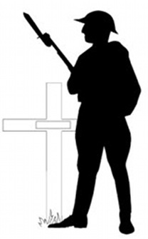

Paroisse Saint-Paul de Senneterre Feuillet paroissial du 3 au 16 novembre 2025
Les innombrables bénédictions issues du pardon
Être pardonné par Dieu engendre une bénédiction inouïe. C’est David qui, peut-être, donne la description la plus magnifique de ce principe, dans le Psaume 32. En hébreu, ce Psaume commence par un pluriel : “bénédictions”. « Oh, combien de bénédictions pour celui à qui la transgression est remise, à qui le péché est pardonné ». Il existe d’innombrables bénédictions découlant du pardon de nos péchés par Dieu.
Avez-vous remarqué que la Bible ne mentionne aucun homme n’ayant pas besoin de pardon ? Elle indique clairement que nous tous avons besoin du pardon de Dieu ; il n’y a aucune exception. Dans d’autres Psaumes, David dit qu’il n’existe aucun homme sans péché. Nous avons tous péché. Pour cette raison, nous avons tous besoin du pardon.
La question n’est pas de savoir si nous avons besoin du pardon, mais si nous le recevons.
Avez-vous conscience de la puissance de bénédiction que contient le pardon ? Prenez le temps d’écouter ce que Dieu veut vous dire à ce sujet.
Prier, c’est simple. Parlez à Dieu comme avec un ami très proche. Dieu vous aime et il peut tout entendre. Voici un exemple de prière : « Merci, Seigneur, pour le sang de Jésus. Je proclame que j’ai besoin de ton pardon et que, lorsque tu me pardonnes, tu m’accordes également de grandes bénédictions. Par le sang de Jésus, tous mes péchés sont pardonnés. Amen. »
Jésus est mort pour nous, pour restaurer la relation entre nous et son Père. Comme Jésus a pardonné à ses bourreaux, il nous invite aussi à demander pardon et à pardonner aussi souvent que nécessaire. Louez le de tout votre cœur pour ce merveilleux cadeau qu’est le pardon !
À présent, approfondissez ce que vous avez reçu. Si vous désirez vivre sous la main de Dieu et être béni dans tous les domaines de votre vie, vous savez ce qu’il vous reste à faire. Demandez pardon et pardonnez, sans jamais vous lasser. Les bénédictions suivront, comme Dieu l’a promis !
Prions ensemble afin d’honorer notre Dieu.
« Merci, Seigneur, pour ce merveilleux outil qu’est le pardon ! À toi soient le règne, la puissance et la gloire, amen ! »
En Flandre, quelque part sur un champ de bataille Entre nos croix de bois ont fleuri les pavots. Dans le ciel, ignorant le bruit de la mitraillette, L’alouette gaiement chante le jour nouveau.
Nous, les morts d’aujourd’hui, vivants hier encore Nous riions, nous aimions et nous étions aimés. Nous dont les yeux voyaient le couchant et l’aurore, En Flandre, quelque part, reposons à jamais.
Vous qui nous survivez, c’est à vous de reprendre Le flambeau du combat dans nos doigts décharnés. C’est un devoir sacré. Sous la terre de Flandre, Nous ne dormirons point si vous le profanez.
John McCras Médecin militaire canadien
L’Équipe de la Joie
Notre mission est d’apporter de la joie aux personnes de notre entourage, surtout celles qui sont seules ou malades, par des visites, des appels téléphoniques, en soulignant les fêtes et toutes initiatives pour contrer l’isolement de nos aînés. Nous avons besoin de bénévoles pour remplir ce mandat.
Si vous êtes intéressé(e)s à joindre l’Équipe de la Joie, vous pouvez donner votre nom au secrétariat au 819-737-2045 ou encore le 819-737-4667. Merci !
Capitation 2025
Afin de garder notre Église bien vivante, votre don est une façon de la conserver au niveau financier pour s’assurer un lieu de culte accueillant et sécuritaire.
Vous pouvez également faire vos dons via la Poste en les adressant à La Fabrique St-Paul, 700, 8e Avenue, Senneterre, J0Y 2M0 ou en vous rendant au secrétariat de la Fabrique.
Heures d’ouverture du secrétariat
Lundi, mercredi et vendredi : 9h30 à 13h00
Revenus du
Quêtes
Prions en Église
Lampions
Capitation
Agenda liturgique du 2 au 16 novembre 2025
Dim 2
Retour à l’heure normale
10h30
Messe à Lebel-sur-Quévillon
16h00
Messe :
Membres défuntsFilles d’Isabelle Cercle Pacelli Père Gaston Letendre et Jean-Paul BlouinÉmilienne et famille